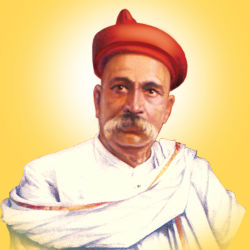

BAL GANGADHAR TILAK

Date of Birth: 23 July 1856
Place of Birth: Ratnagiri, Maharashtra
Parents: GangadharTilak (father) and Parvatibai (mother)
Spouse: Tapibai renamed Satyabhamabai
Children: Ramabai Vaidya, Parvatibai Kelkar, Vishwanath Balwant Tilak, Rambhau Balwant Tilak, Shridhar Balwant Tilak, and Ramabai Sane.
Education: Deccan College, Government Law College.
Association: Indian National Congress, Indian Home Rule League, Deccan Educational Society
Movement: Indian Independence Movement
Political Ideology: Nationalism, Extremism.
Religious Beliefs: Hinduism
Publications: The Arctic Home in the Vedas (1903); Srimad Bhagvat Gita Rahasya (1915)
Passed Away: 1 August 1920
Memorial: Tilak Wada, Ratnagiri, Maharashtra
Bal Gangadhar Tilak was an Indian social reformer and freedom activist. He was one of the prime architects of modern India and probably the strongest advocates of Swaraj or Self Rule for India. His famous declaration “Swaraj is my birthright, and I shall have it” served as an inspiration for future revolutionaries during India’s struggle for freedom. The British Government termed him as the "Father of Indian Unrest" and his followers bequeathed upon him the title of ‘Lokmanya’ meaning he who is revered by the people. Tilak was a brilliant politician as well as a profound scholar who believed that independence is the foremost necessity for the well being of a nation.
Childhood & Early Life
Keshav Gangadhar Tilak was born on July 22, 1856 in a middle class Chitpavan Brahmin family in Ratnagiri, a small coastal town in south-western Maharashtra. His father, Gangadhar Shastri was a noted Sanskrit scholar and school teacher at Ratnagiri. His mother's name was Paravti Bai Gangadhar. Following his father's transfer, the family shifted to Poona (now Pune). In 1871 Tilak was married to Tapibai who was later rechristened as Satyabhamabai.
Tilak was a brilliant student. As a child, he was truthful and straightforward in nature. He had an intolerant attitude towards injustice and had independent opinions from an early age. After graduating from Deccan College, Pune, in 1877 in Sanskrit and Mathematics, Tilak studied L.L.B. at the Government Law College, Bombay (now Mumbai). He received his law degree in 1879. After finishing his education, he started teaching English and Mathematics at a private school in Poona. Following a disagreement with the school authorities he quit and helped found a school in 1880 that laid emphasis on nationalism. Though, he was among India's first generation of youths to receive a modern, college education, Tilak strongly criticised the educational system followed by the British in India. He protested against the unequal treatment of the Indian students compared to their British peers and its total disregard for India’s cultural heritage. According to him, the education was not at all adequate for Indians who remained woefully ignorant about their own origins. He started the Deccan Educational Society with college batchmates, Vishnu Shastry Chiplunkar and Gopal Ganesh Agarkar for the purpose of inspiring nationalist education among Indian students. Parallel to his teaching activities, Tilak founded two newspapers ‘Kesari’ in Marathi and ‘Mahratta’ in English.